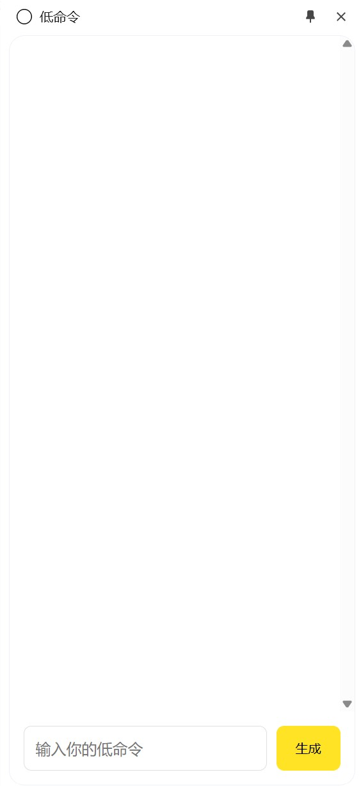

功能：
1、打开浏览器侧边栏
2、根据输入的自然语言命令操控当前网页

低命令有且仅有 1 个作用
1使用自然语言来修改或调用当前网页的内容和功能
2未来支持跨域调用网页功能和主流网站的命令优化
有两种安装方式取决于你能否那个
暂时未发布到chrome应用商店
请先下载然后本地安装
- 1.按一下 Chrome 地址栏右侧的「三个点点」按钮
- 2.选择「扩展程序」
- 3.勾选右上角的「开发者模式」
- 4.把下载回来的 cmd.pub.7z 文件解压
- 5.访问地址：chrome://extensions/ 并打开右上角「开发者模式」
- 6.点击左上角「加载已解压的扩展程序」
- 7.选择4.解压后的文件夹并确定
常见问题 FAQ
- 这个页面的风格像谁？
- 参考https://anyway.fm/tab/
- 支持哪些平台？
- Chrome支持的平台均可
- 有 BUG，怎么联系你们？
- 可以去 GitHub 上提 issue
- 如何卸载 低命令？
- 点击菜单里的「更多工具」→「扩展程序」找到本插件并删除